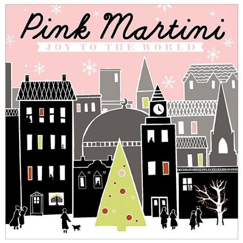

Essays:
The Little Drummer Boy
17 Dec 2020 · 2 min read

This is an odd little song, but an undeniable Christmas favorite.
It was written in 1941 by the American classical composer Katherine Kennicott Davis, and was said to be based on a traditional Czech carol. Davis’ interest in writing the song was to produce something that could be sung by amateur and girls’ choirs. The original title was “Carol of the Drum.”
It was first recorded in 1951, but the first version with mass appeal was recorded by the Trapp Family Singers in 1955. The song was altered somewhat over the next couple of years, and had its title changed to the one we know today during this same period.
It’s been recorded pretty much nonstop since 1957, by almost everyone with a voice.
If we take away all the “pa rum pum pum pum” sounds (which, after all, aren’t really words), then here’s what we’re left with in terms of the lyrics.
Come they told me,
A new born king to see.
Our finest gifts we bring,
To lay before the king.
So to honor Him.
When we come.Little baby,
I am a poor boy too.
I have no gift to bring.
That’s fit to give our King.Shall I play for you,
On my drum.Mary nodded,
The ox and lamb kept time.
I played my drum for Him.
I played my best for Him.Then He smiled at me,
Me and my drum.
Certainly part of the lasting appeal of Christmas is the idea that even those from humble beginnings can be recognized as worthy. “The Little Drummer Boy” embodies this value in its story, with the additional bonus, for musicians, of featuring one of their own in its starring role.
There are several versions of this one that I can heartily recommend.
- The version by Lou Rawls, from 1957;
- The version by Bob Seger and the Silver Bullet Band, from 1987;
- The version by Pink Martini, from 2010.
These are all quite different, but each one is convincing and musically accomplished in its own way.
Next: “My Favorite Things”
Or see the complete list of Christmas Favorites from The Practical Utopian.